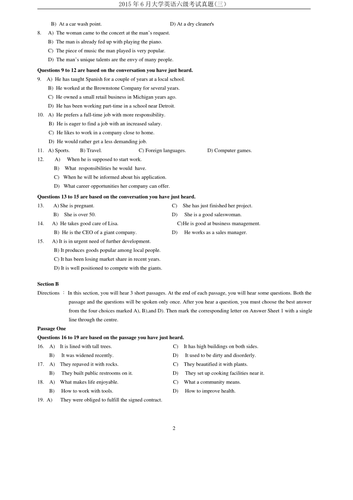
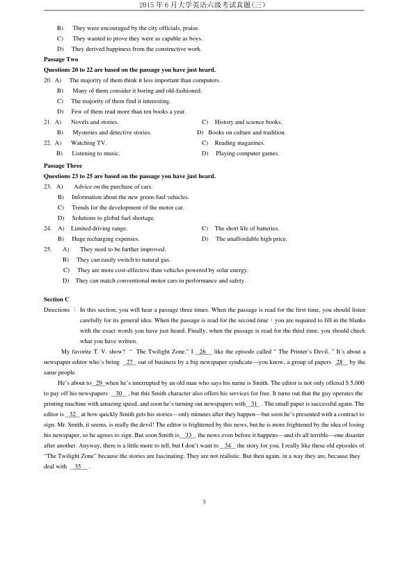
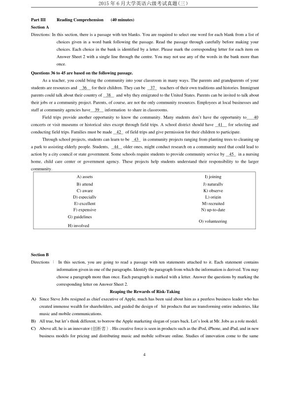
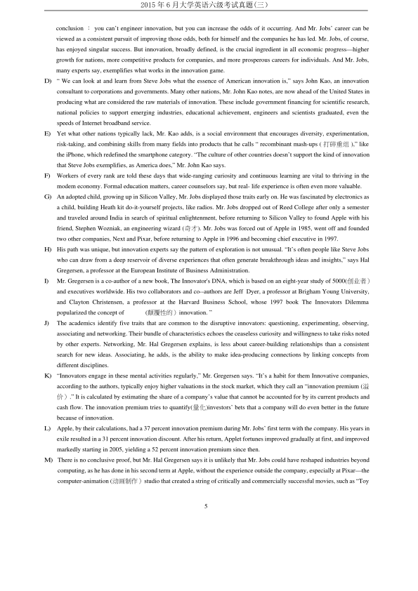
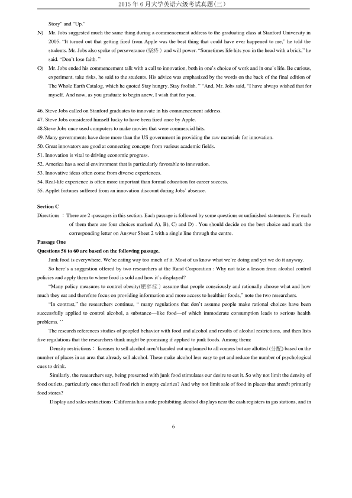
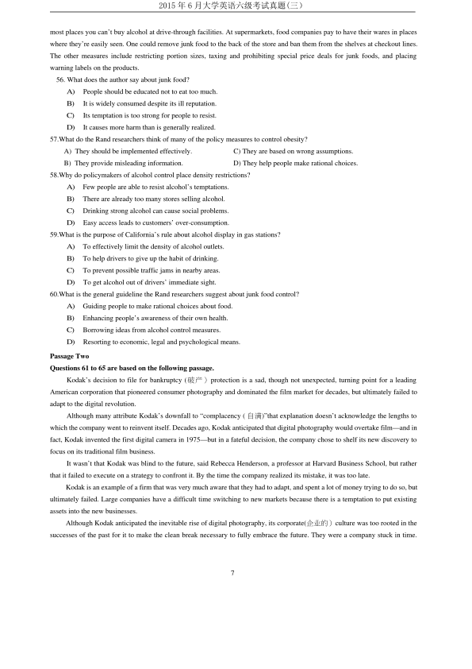
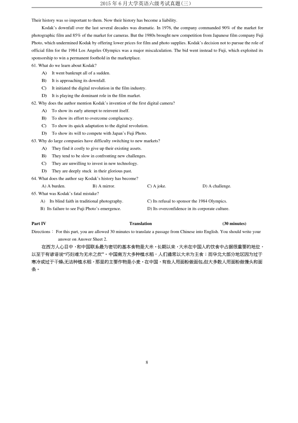

第 1 / 8 页

2015 年6 月大学英语六级考试真题(三）
1
2015 年6 月大学英语四级考试真题（第3 套)
Part I
Writing
(30 minutes)
Directions ：For this part, you are allowed 30 minutes to write an essay based on the picture below.
You should start your essay with a brief description of the picture and then comment on parents' role in their
children’s growth. You should write at least 120 words but no more than 180 words.
Part II
Listening Comprehension (30 minutes)
Section A
Directions ：In this section, you will hear 8 short conversations and 2 long conversations. At the end of each conversation, one or
more questions will be asked about what was said. Both the conversation and the questions will be spoken only
once. After each question there will be a pause. During the pause, you must read the four choices marked A), B),
C) and D), and decide which is the best answer. Then mark the corresponding letter on Answer Sheet 1 with a
single line through the centre.
1. A)
The woman is the manager's secretary.
C)
The man is the manager’s business associate.
B)
The man found himself in a wrong place.
D)
The woman was putting up a sign on the wall.
2. A)
He needs more time for the report.
C)
He is sorry not to have helped the woman.
B)
He needs help to interpret the data.
D)
He does not have sufficient data to go on.
3. A)
A friend from New York.
C)
A postal delivery.
B)
A message from Tony.
D)
A change in the weather.
4.
A)
She is not available until the end of next week.
B)
She is not a reliable source of information.
C)
She does not like taking exams.
D)
She does not like psychology.
5.
A)
He will help the woman carry the suitcase.
B) The woman’s watch is twenty minutes fast.
C) The woman shouldn’t make such a big fuss.
D) There is no need for the woman to be in a hurry.
6.
A)
Mary is not so easygoing as her.
C)
She finds it hard to get along with Mary.
B) Mary and she have a lot in common.
D)
She does not believe what her neighbors said.
7.
A) At an information service.
C) At a repair shop.
“Good news mom! I was accepted to the college of your choice.”
查看 / 复制本页文字
2015 年6 月大学英语六级考试真题(三） 1 2015 年6 月大学英语四级考试真题（第3 套) Part I Writing (30 minutes) Directions ：For this part, you are allowed 30 minutes to write an essay based on the picture below. You should start your essay with a brief description of the picture and then comment on parents' role in their children’s growth. You should write at least 120 words but no more than 180 words. Part II Listening Comprehension (30 minutes) Section A Directions ：In this section, you will hear 8 short conversations and 2 long conversations. At the end of each conversation, one or more questions will be asked about what was said. Both the conversation and the questions will be spoken only once. After each question there will be a pause. During the pause, you must read the four choices marked A), B), C) and D), and decide which is the best answer. Then mark the corresponding letter on Answer Sheet 1 with a single line through the centre. 1. A) The woman is the manager's secretary. C) The man is the manager’s business associate. B) The man found himself in a wrong place. D) The woman was putting up a sign on the wall. 2. A) He needs more time for the report. C) He is sorry not to have helped the woman. B) He needs help to interpret the data. D) He does not have sufficient data to go on. 3. A) A friend from New York. C) A postal delivery. B) A message from Tony. D) A change in the weather. 4. A) She is not available until the end of next week. B) She is not a reliable source of information. C) She does not like taking exams. D) She does not like psychology. 5. A) He will help the woman carry the suitcase. B) The woman’s watch is twenty minutes fast. C) The woman shouldn’t make such a big fuss. D) There is no need for the woman to be in a hurry. 6. A) Mary is not so easygoing as her. C) She finds it hard to get along with Mary. B) Mary and she have a lot in common. D) She does not believe what her neighbors said. 7. A) At an information service. C) At a repair shop. “Good news mom! I was accepted to the college of your choice.”
第 2 / 8 页

2015 年6 月大学英语六级考试真题(三）
2
B) At a car wash point.
D) At a dry cleaner's
8.
A) The woman came to the concert at the man’s request.
B) The man is already fed up with playing the piano.
C) The piece of music the man played is very popular.
D) The man’s unique talents are the envy of many people.
Questions 9 to 12 are based on the conversation you have just heard.
9.
A) He has taught Spanish for a couple of years at a local school.
B) He worked at the Brownstone Company for several years.
C) He owned a small retail business in Michigan years ago.
D) He has been working part-time in a school near Detroit.
10. A) He prefers a full-time job with more responsibility.
B) He is eager to find a job with an increased salary.
C) He likes to work in a company close to home.
D) He would rather get a less demanding job.
11. A) Sports.
B) Travel.
C) Foreign languages.
D) Computer games.
12.
A)
When he is supposed to start work.
B)
What responsibilities he would have.
C) When he will be informed about his application.
D) What career opportunities her company can offer.
Questions 13 to 15 are based on the conversation you have just heard.
13.
A) She is pregnant.
C)
She has just finished her project.
B)
She is over 50.
D)
She is a good saleswoman.
14.
A) He takes good care of Lisa.
C)He is good at business management.
B) He is the CEO of a giant company.
D)
He works as a sales manager.
15.
A) It is in urgent need of further development.
B) It produces goods popular among local people.
C) It has been losing market share in recent years.
D) It is well positioned to compete with the giants.
Section B
Directions ：In this section, you will hear 3 short passages. At the end of each passage, you will hear some questions. Both the
passage and the questions will be spoken only once. After you hear a question, you must choose the best answer
from the four choices marked A), B),and D). Then mark the corresponding letter on Answer Sheet 1 with a single
line through the centre.
Passage One
Questions 16 to 19 are based on the passage you have just heard.
16.
A)
It is lined with tall trees.
C)
It has high buildings on both sides.
B)
It was widened recently.
D)
It used to be dirty and disorderly.
17.
A)
They repaved it with rocks.
C)
They beautified it with plants.
B)
They built public restrooms on it.
D)
They set up cooking facilities near it.
18.
A)
What makes life enjoyable.
C)
What a community means.
B)
How to work with tools.
D)
How to improve health.
19. A)
They were obliged to fulfill the signed contract.
查看 / 复制本页文字
2015 年6 月大学英语六级考试真题(三） 2 B) At a car wash point. D) At a dry cleaner's 8. A) The woman came to the concert at the man’s request. B) The man is already fed up with playing the piano. C) The piece of music the man played is very popular. D) The man’s unique talents are the envy of many people. Questions 9 to 12 are based on the conversation you have just heard. 9. A) He has taught Spanish for a couple of years at a local school. B) He worked at the Brownstone Company for several years. C) He owned a small retail business in Michigan years ago. D) He has been working part-time in a school near Detroit. 10. A) He prefers a full-time job with more responsibility. B) He is eager to find a job with an increased salary. C) He likes to work in a company close to home. D) He would rather get a less demanding job. 11. A) Sports. B) Travel. C) Foreign languages. D) Computer games. 12. A) When he is supposed to start work. B) What responsibilities he would have. C) When he will be informed about his application. D) What career opportunities her company can offer. Questions 13 to 15 are based on the conversation you have just heard. 13. A) She is pregnant. C) She has just finished her project. B) She is over 50. D) She is a good saleswoman. 14. A) He takes good care of Lisa. C)He is good at business management. B) He is the CEO of a giant company. D) He works as a sales manager. 15. A) It is in urgent need of further development. B) It produces goods popular among local people. C) It has been losing market share in recent years. D) It is well positioned to compete with the giants. Section B Directions ：In this section, you will hear 3 short passages. At the end of each passage, you will hear some questions. Both the passage and the questions will be spoken only once. After you hear a question, you must choose the best answer from the four choices marked A), B),and D). Then mark the corresponding letter on Answer Sheet 1 with a single line through the centre. Passage One Questions 16 to 19 are based on the passage you have just heard. 16. A) It is lined with tall trees. C) It has high buildings on both sides. B) It was widened recently. D) It used to be dirty and disorderly. 17. A) They repaved it with rocks. C) They beautified it with plants. B) They built public restrooms on it. D) They set up cooking facilities near it. 18. A) What makes life enjoyable. C) What a community means. B) How to work with tools. D) How to improve health. 19. A) They were obliged to fulfill the signed contract.
第 3 / 8 页

2015 年6 月大学英语六级考试真题(三）
3
B)
They were encouraged by the city officials, praise.
C)
They wanted to prove they were as capable as boys.
D)
They derived happiness from the constructive work.
Passage Two
Questions 20 to 22 are based on the passage you have just heard.
20. A)
The majority of them think it less important than computers.
B)
Many of them consider it boring and old-fashioned.
C)
The majority of them find it interesting.
D)
Few of them read more than ten books a year.
21. A)
Novels and stories.
C)
History and science books.
B)
Mysteries and detective stories.
D) Books on culture and tradition.
22. A)
Watching TV.
C)
Reading magazines.
B)
Listening to music.
D)
Playing computer games.
Passage Three
Questions 23 to 25 are based on the passage you have just heard.
23. A)
Advice on the purchase of cars.
B)
Information about the new green-fuel vehicles.
C)
Trends for the development of the motor car.
D)
Solutions to global fuel shortage.
24.
A)
Limited driving range.
C)
The short life of batteries.
B)
Huge recharging expenses.
D)
The unaffordable high price.
25.
A)
They need to be further improved.
B)
They can easily switch to natural gas.
C)
They are more cost-effective than vehicles powered by solar energy.
D)
They can match conventional motor cars in performance and safety.
Section C
Directions ：In this section, you will hear a passage three times. When the passage is read for the first time, you should listen
carefully for its general idea. When the passage is read for the second time，you are required to fill in the blanks
with the exact words you have just heard. Finally, when the passage is read for the third time, you should check
what you have written.
My favorite T. V. show? “ The Twilight Zone.” I
26
like the episode called “ The Printer’s Devil. ” It’s about a
newspaper editor who’s being
27
out of business by a big newspaper syndicate—you know, a group of papers
28
by the
same people.
He’s about to 29 when he’s interrupted by an old man who says his name is Smith. The editor is not only offered $ 5,000
to pay off his newspapers
30
, but this Smith character also offers his services for free. It turns out that the guy operates the
printing machine with amazing speed, and soon he’s turning out newspapers with
31 . The small paper is successful again. The
editor is
32
at how quickly Smith gets his stories—only minutes after they happen—but soon he’s presented with a contract to
sign. Mr. Smith, it seems, is really the devil! The editor is frightened by this news, but he is more frightened by the idea of losing
his newspaper, so he agrees to sign. But soon Smith is
33
the news even before it happens—and ifs all terrible—one disaster
after another. Anyway, there is a little more to tell, but I don’t want to
34
the story for you. I really like these old episodes of
“The Twilight Zone” because the stories are fascinating. They are not realistic. But then again, in a way they are, because they
deal with
35
.
查看 / 复制本页文字
2015 年6 月大学英语六级考试真题(三） 3 B) They were encouraged by the city officials, praise. C) They wanted to prove they were as capable as boys. D) They derived happiness from the constructive work. Passage Two Questions 20 to 22 are based on the passage you have just heard. 20. A) The majority of them think it less important than computers. B) Many of them consider it boring and old-fashioned. C) The majority of them find it interesting. D) Few of them read more than ten books a year. 21. A) Novels and stories. C) History and science books. B) Mysteries and detective stories. D) Books on culture and tradition. 22. A) Watching TV. C) Reading magazines. B) Listening to music. D) Playing computer games. Passage Three Questions 23 to 25 are based on the passage you have just heard. 23. A) Advice on the purchase of cars. B) Information about the new green-fuel vehicles. C) Trends for the development of the motor car. D) Solutions to global fuel shortage. 24. A) Limited driving range. C) The short life of batteries. B) Huge recharging expenses. D) The unaffordable high price. 25. A) They need to be further improved. B) They can easily switch to natural gas. C) They are more cost-effective than vehicles powered by solar energy. D) They can match conventional motor cars in performance and safety. Section C Directions ：In this section, you will hear a passage three times. When the passage is read for the first time, you should listen carefully for its general idea. When the passage is read for the second time，you are required to fill in the blanks with the exact words you have just heard. Finally, when the passage is read for the third time, you should check what you have written. My favorite T. V. show? “ The Twilight Zone.” I 26 like the episode called “ The Printer’s Devil. ” It’s about a newspaper editor who’s being 27 out of business by a big newspaper syndicate—you know, a group of papers 28 by the same people. He’s about to 29 when he’s interrupted by an old man who says his name is Smith. The editor is not only offered $ 5,000 to pay off his newspapers 30 , but this Smith character also offers his services for free. It turns out that the guy operates the printing machine with amazing speed, and soon he’s turning out newspapers with 31 . The small paper is successful again. The editor is 32 at how quickly Smith gets his stories—only minutes after they happen—but soon he’s presented with a contract to sign. Mr. Smith, it seems, is really the devil! The editor is frightened by this news, but he is more frightened by the idea of losing his newspaper, so he agrees to sign. But soon Smith is 33 the news even before it happens—and ifs all terrible—one disaster after another. Anyway, there is a little more to tell, but I don’t want to 34 the story for you. I really like these old episodes of “The Twilight Zone” because the stories are fascinating. They are not realistic. But then again, in a way they are, because they deal with 35 .
第 4 / 8 页

2015 年6 月大学英语六级考试真题(三）
4
Part III
Reading Comprehension
(40 minutes)
Section A
Directions: In this section, there is a passage with ten blanks. You are required to select one word for each blank from a list of
choices given in a word bank following the passage. Read the passage through carefully before making your
choices. Each choice in the bank is identified by a letter. Please mark the corresponding letter for each item on
Answer Sheet 2 with a single line through the centre. You may not use any of the words in the bank more than
once.
Questions 36 to 45 are based on the following passage.
As a teacher, you could bring the community into your classroom in many ways. The parents and grandparents of your
students are resources and
36
for their children. They can be
37
teachers of their own traditions and histories. Immigrant
parents could talk about their country of
38
and why they emigrated to the United States. Parents can be invited to talk about
their jobs or a community project. Parents, of course, are not the only community resources. Employees at local businesses and
staff at community agencies have
39
information to share in classrooms.
Field trips provide another opportunity to know the community. Many students don’t have the opportunity to
40
concerts or visit museums or historical sites except through field trips. A school district should have
41
for selecting and
conducting field trips. Families must be made
42
of field trips and give permission for their children to participate.
Through school projects, students can learn to be
43
in community projects ranging from planting trees to cleaning up
a park to assisting elderly people. Students,
44
older ones, might conduct research on a community need that could lead to
action by a city council or state government. Some schools require students to provide community service by
45
in a nursing
home, child care center or government agency. These projects help students understand their responsibility to the larger
community.
Section B
Directions ：In this section, you are going to read a passage with ten statements attached to it. Each statement contains
information given in one of the paragraphs. Identify the paragraph from which the information is derived. You may
choose a paragraph more than once. Each paragraph is marked with a letter. Answer the questions by marking the
corresponding letter on Answer Sheet 2.
Reaping the Rewards of Risk-Taking
A) Since Steve Jobs resigned as chief executive of Apple, much has been said about him as a peerless business leader who has
created immense wealth for shareholders, and guided the design of
hit products that are transforming entire industries, like
music and mobile communications.
B) All true, but let’s think different, to borrow the Apple marketing slogan of years back. Let’s look at Mr. Jobs as a role model.
C) Above all, he is an innovator (创新者）. His creative force is seen in products such as the iPod, iPhone, and iPad, and in new
business models for pricing and distributing music and mobile software online. Studies of innovation come to the same
A) assets
I) joining
B) attend
J) naturally
C) aware
K) observe
D) especially
L) origin
E) excellent
M) recruited
F) expensive
N) up-to-date
G) guidelines
H) involved
O) volunteering
查看 / 复制本页文字
2015 年6 月大学英语六级考试真题(三） 4 Part III Reading Comprehension (40 minutes) Section A Directions: In this section, there is a passage with ten blanks. You are required to select one word for each blank from a list of choices given in a word bank following the passage. Read the passage through carefully before making your choices. Each choice in the bank is identified by a letter. Please mark the corresponding letter for each item on Answer Sheet 2 with a single line through the centre. You may not use any of the words in the bank more than once. Questions 36 to 45 are based on the following passage. As a teacher, you could bring the community into your classroom in many ways. The parents and grandparents of your students are resources and 36 for their children. They can be 37 teachers of their own traditions and histories. Immigrant parents could talk about their country of 38 and why they emigrated to the United States. Parents can be invited to talk about their jobs or a community project. Parents, of course, are not the only community resources. Employees at local businesses and staff at community agencies have 39 information to share in classrooms. Field trips provide another opportunity to know the community. Many students don’t have the opportunity to 40 concerts or visit museums or historical sites except through field trips. A school district should have 41 for selecting and conducting field trips. Families must be made 42 of field trips and give permission for their children to participate. Through school projects, students can learn to be 43 in community projects ranging from planting trees to cleaning up a park to assisting elderly people. Students, 44 older ones, might conduct research on a community need that could lead to action by a city council or state government. Some schools require students to provide community service by 45 in a nursing home, child care center or government agency. These projects help students understand their responsibility to the larger community. Section B Directions ：In this section, you are going to read a passage with ten statements attached to it. Each statement contains information given in one of the paragraphs. Identify the paragraph from which the information is derived. You may choose a paragraph more than once. Each paragraph is marked with a letter. Answer the questions by marking the corresponding letter on Answer Sheet 2. Reaping the Rewards of Risk-Taking A) Since Steve Jobs resigned as chief executive of Apple, much has been said about him as a peerless business leader who has created immense wealth for shareholders, and guided the design of hit products that are transforming entire industries, like music and mobile communications. B) All true, but let’s think different, to borrow the Apple marketing slogan of years back. Let’s look at Mr. Jobs as a role model. C) Above all, he is an innovator (创新者）. His creative force is seen in products such as the iPod, iPhone, and iPad, and in new business models for pricing and distributing music and mobile software online. Studies of innovation come to the same A) assets I) joining B) attend J) naturally C) aware K) observe D) especially L) origin E) excellent M) recruited F) expensive N) up-to-date G) guidelines H) involved O) volunteering
第 5 / 8 页

2015 年6 月大学英语六级考试真题(三）
5
conclusion ：you can’t engineer innovation, but you can increase the odds of it occurring. And Mr. Jobs’ career can be
viewed as a consistent pursuit of improving those odds, both for himself and the companies he has led. Mr. Jobs, of course,
has enjoyed singular success. But innovation, broadly defined, is the crucial ingredient in all economic progress—higher
growth for nations, more competitive products for companies, and more prosperous careers for individuals. And Mr. Jobs,
many experts say, exemplifies what works in the innovation game.
D)
“ We can look at and learn from Steve Jobs what the essence of American innovation is,” says John Kao, an innovation
consultant to corporations and governments. Many other nations, Mr. John Kao notes, are now ahead of the United States in
producing what are considered the raw materials of innovation. These include government financing for scientific research,
national policies to support emerging industries, educational achievement, engineers and scientists graduated, even the
speeds of Internet broadband service.
E)
Yet what other nations typically lack, Mr. Kao adds, is a social environment that encourages diversity, experimentation,
risk-taking, and combining skills from many fields into products that he calls “ recombinant mash-ups ( 打碎重组),” like
the iPhone, which redefined the smartphone category. “The culture of other countries doesn’t support the kind of innovation
that Steve Jobs exemplifies, as America does,” Mr. John Kao says.
F)
Workers of every rank are told these days that wide-ranging curiosity and continuous learning are vital to thriving in the
modem economy. Formal education matters, career counselors say, but real- life experience is often even more valuable.
G)
An adopted child, growing up in Silicon Valley, Mr. Jobs displayed those traits early on. He was fascinated by electronics as
a child, building Heath kit do-it-yourself projects, like radios. Mr. Jobs dropped out of Reed College after only a semester
and traveled around India in search of spiritual enlightenment, before returning to Silicon Valley to found Apple with his
friend, Stephen Wozniak, an engineering wizard (奇才). Mr. Jobs was forced out of Apple in 1985, went off and founded
two other companies, Next and Pixar, before returning to Apple in 1996 and becoming chief executive in 1997.
H)
His path was unique, but innovation experts say the pattern of exploration is not unusual. “It’s often people like Steve Jobs
who can draw from a deep reservoir of diverse experiences that often generate breakthrough ideas and insights,” says Hal
Gregersen, a professor at the European Institute of Business Administration.
I)
Mr. Gregersen is a co-author of a new book, The Innovator's DNA, which is based on an eight-year study of 5000(创业者）
and executives worldwide. His two collaborators and co--authors are Jeff Dyer, a professor at Brigham Young University,
and Clayton Christensen, a professor at the Harvard Business School, whose 1997 book The Innovators Dilemma
popularized the concept of
(颠覆性的）innovation. ”
J)
The academics identify five traits that are common to the disruptive innovators: questioning, experimenting, observing,
associating and networking. Their bundle of characteristics echoes the ceaseless curiosity and willingness to take risks noted
by other experts. Networking, Mr. Hal Gregersen explains, is less about career-building relationships than a consistent
search for new ideas. Associating, he adds, is the ability to make idea-producing connections by linking concepts from
different disciplines.
K)
“Innovators engage in these mental activities regularly,” Mr. Gregersen says. “It’s a habit for them Innovative companies,
according to the authors, typically enjoy higher valuations in the stock market, which they call an “innovation premium (溢
价）.” It is calculated by estimating the share of a company’s value that cannot be accounted for by its current products and
cash flow. The innovation premium tries to quantify(量化)investors’ bets that a company will do even better in the future
because of innovation.
L)
Apple, by their calculations, had a 37 percent innovation premium during Mr. Jobs’ first term with the company. His years in
exile resulted in a 31 percent innovation discount. After his return, Applet fortunes improved gradually at first, and improved
markedly starting in 2005, yielding a 52 percent innovation premium since then.
M) There is no conclusive proof, but Mr. Hal Gregersen says it is unlikely that Mr. Jobs could have reshaped industries beyond
computing, as he has done in his second term at Apple, without the experience outside the company, especially at Pixar—the
computer-animation (动画制作）studio that created a string of critically and commercially successful movies, such as “Toy
查看 / 复制本页文字
2015 年6 月大学英语六级考试真题(三） 5 conclusion ：you can’t engineer innovation, but you can increase the odds of it occurring. And Mr. Jobs’ career can be viewed as a consistent pursuit of improving those odds, both for himself and the companies he has led. Mr. Jobs, of course, has enjoyed singular success. But innovation, broadly defined, is the crucial ingredient in all economic progress—higher growth for nations, more competitive products for companies, and more prosperous careers for individuals. And Mr. Jobs, many experts say, exemplifies what works in the innovation game. D) “ We can look at and learn from Steve Jobs what the essence of American innovation is,” says John Kao, an innovation consultant to corporations and governments. Many other nations, Mr. John Kao notes, are now ahead of the United States in producing what are considered the raw materials of innovation. These include government financing for scientific research, national policies to support emerging industries, educational achievement, engineers and scientists graduated, even the speeds of Internet broadband service. E) Yet what other nations typically lack, Mr. Kao adds, is a social environment that encourages diversity, experimentation, risk-taking, and combining skills from many fields into products that he calls “ recombinant mash-ups ( 打碎重组),” like the iPhone, which redefined the smartphone category. “The culture of other countries doesn’t support the kind of innovation that Steve Jobs exemplifies, as America does,” Mr. John Kao says. F) Workers of every rank are told these days that wide-ranging curiosity and continuous learning are vital to thriving in the modem economy. Formal education matters, career counselors say, but real- life experience is often even more valuable. G) An adopted child, growing up in Silicon Valley, Mr. Jobs displayed those traits early on. He was fascinated by electronics as a child, building Heath kit do-it-yourself projects, like radios. Mr. Jobs dropped out of Reed College after only a semester and traveled around India in search of spiritual enlightenment, before returning to Silicon Valley to found Apple with his friend, Stephen Wozniak, an engineering wizard (奇才). Mr. Jobs was forced out of Apple in 1985, went off and founded two other companies, Next and Pixar, before returning to Apple in 1996 and becoming chief executive in 1997. H) His path was unique, but innovation experts say the pattern of exploration is not unusual. “It’s often people like Steve Jobs who can draw from a deep reservoir of diverse experiences that often generate breakthrough ideas and insights,” says Hal Gregersen, a professor at the European Institute of Business Administration. I) Mr. Gregersen is a co-author of a new book, The Innovator's DNA, which is based on an eight-year study of 5000(创业者） and executives worldwide. His two collaborators and co--authors are Jeff Dyer, a professor at Brigham Young University, and Clayton Christensen, a professor at the Harvard Business School, whose 1997 book The Innovators Dilemma popularized the concept of (颠覆性的）innovation. ” J) The academics identify five traits that are common to the disruptive innovators: questioning, experimenting, observing, associating and networking. Their bundle of characteristics echoes the ceaseless curiosity and willingness to take risks noted by other experts. Networking, Mr. Hal Gregersen explains, is less about career-building relationships than a consistent search for new ideas. Associating, he adds, is the ability to make idea-producing connections by linking concepts from different disciplines. K) “Innovators engage in these mental activities regularly,” Mr. Gregersen says. “It’s a habit for them Innovative companies, according to the authors, typically enjoy higher valuations in the stock market, which they call an “innovation premium (溢 价）.” It is calculated by estimating the share of a company’s value that cannot be accounted for by its current products and cash flow. The innovation premium tries to quantify(量化)investors’ bets that a company will do even better in the future because of innovation. L) Apple, by their calculations, had a 37 percent innovation premium during Mr. Jobs’ first term with the company. His years in exile resulted in a 31 percent innovation discount. After his return, Applet fortunes improved gradually at first, and improved markedly starting in 2005, yielding a 52 percent innovation premium since then. M) There is no conclusive proof, but Mr. Hal Gregersen says it is unlikely that Mr. Jobs could have reshaped industries beyond computing, as he has done in his second term at Apple, without the experience outside the company, especially at Pixar—the computer-animation (动画制作）studio that created a string of critically and commercially successful movies, such as “Toy
第 6 / 8 页

2015 年6 月大学英语六级考试真题(三）
6
Story” and “Up.”
N)
Mr. Jobs suggested much the same thing during a commencement address to the graduating class at Stanford University in
2005. “It turned out that getting fired from Apple was the best thing that could have ever happened to me,” he told the
students. Mr. Jobs also spoke of perseverance (坚持）and will power. “Sometimes life hits you in the head with a brick,” he
said. “Don’t lose faith. ”
O)
Mr. Jobs ended his commencement talk with a call to innovation, both in one’s choice of work and in one’s life. Be curious,
experiment, take risks, he said to the students. His advice was emphasized by the words on the back of the final edition of
The Whole Earth Catalog, which he quoted Stay hungry. Stay foolish. ” “And, Mr. Jobs said, “I have always wished that for
myself. And now, as you graduate to begin anew, I wish that for you.
46. Steve Jobs called on Stanford graduates to innovate in his commencement address.
47. Steve Jobs considered himself lucky to have been fired once by Apple.
48.Steve Jobs once used computers to make movies that were commercial hits.
49. Many governments have done more than the US government in providing the raw materials for innovation.
50. Great innovators are good at connecting concepts from various academic fields.
51. Innovation is vital to driving economic progress.
52. America has a social environment that is particularly favorable to innovation.
53. Innovative ideas often come from diverse experiences.
54. Real-life experience is often more important than formal education for career success.
55. Applet fortunes suffered from an innovation discount during Jobs’ absence.
Section C
Directions ：There are 2 -passages in this section. Each passage is followed by some questions or unfinished statements. For each
of them there are four choices marked A), B), C) and D) . You should decide on the best choice and mark the
corresponding letter on Answer Sheet 2 with a single line through the centre.
Passage One
Questions 56 to 60 are based on the following passage.
Junk food is everywhere. We’re eating way too much of it. Most of us know what we’re doing and yet we do it anyway.
So here’s a suggestion offered by two researchers at the Rand Corporation : Why not take a lesson from alcohol control
policies and apply them to where food is sold and how it’s displayed?
“Many policy measures to control obesity(肥胖症）assume that people consciously and rationally choose what and how
much they eat and therefore focus on providing information and more access to healthier foods,” note the two researchers.
“In contrast,” the researchers continue, “ many regulations that don’t assume people make rational choices have been
successfully applied to control alcohol, a substance—like food—of which immoderate consumption leads to serious health
problems. ’’
The research references studies of peopled behavior with food and alcohol and results of alcohol restrictions, and then lists
five regulations that the researchers think might be promising if applied to junk foods. Among them:
Density restrictions：licenses to sell alcohol aren’t handed out unplanned to all comers but are allotted (分配) based on the
number of places in an area that already sell alcohol. These make alcohol less easy to get and reduce the number of psychological
cues to drink.
Similarly, the researchers say, being presented with junk food stimulates our desire to eat it. So why not limit the density of
food outlets, particularly ones that sell food rich in empty calories? And why not limit sale of food in places that aren5t primarily
food stores?
Display and sales restrictions: California has a rule prohibiting alcohol displays near the cash registers in gas stations, and in
查看 / 复制本页文字
2015 年6 月大学英语六级考试真题(三） 6 Story” and “Up.” N) Mr. Jobs suggested much the same thing during a commencement address to the graduating class at Stanford University in 2005. “It turned out that getting fired from Apple was the best thing that could have ever happened to me,” he told the students. Mr. Jobs also spoke of perseverance (坚持）and will power. “Sometimes life hits you in the head with a brick,” he said. “Don’t lose faith. ” O) Mr. Jobs ended his commencement talk with a call to innovation, both in one’s choice of work and in one’s life. Be curious, experiment, take risks, he said to the students. His advice was emphasized by the words on the back of the final edition of The Whole Earth Catalog, which he quoted Stay hungry. Stay foolish. ” “And, Mr. Jobs said, “I have always wished that for myself. And now, as you graduate to begin anew, I wish that for you. 46. Steve Jobs called on Stanford graduates to innovate in his commencement address. 47. Steve Jobs considered himself lucky to have been fired once by Apple. 48.Steve Jobs once used computers to make movies that were commercial hits. 49. Many governments have done more than the US government in providing the raw materials for innovation. 50. Great innovators are good at connecting concepts from various academic fields. 51. Innovation is vital to driving economic progress. 52. America has a social environment that is particularly favorable to innovation. 53. Innovative ideas often come from diverse experiences. 54. Real-life experience is often more important than formal education for career success. 55. Applet fortunes suffered from an innovation discount during Jobs’ absence. Section C Directions ：There are 2 -passages in this section. Each passage is followed by some questions or unfinished statements. For each of them there are four choices marked A), B), C) and D) . You should decide on the best choice and mark the corresponding letter on Answer Sheet 2 with a single line through the centre. Passage One Questions 56 to 60 are based on the following passage. Junk food is everywhere. We’re eating way too much of it. Most of us know what we’re doing and yet we do it anyway. So here’s a suggestion offered by two researchers at the Rand Corporation : Why not take a lesson from alcohol control policies and apply them to where food is sold and how it’s displayed? “Many policy measures to control obesity(肥胖症）assume that people consciously and rationally choose what and how much they eat and therefore focus on providing information and more access to healthier foods,” note the two researchers. “In contrast,” the researchers continue, “ many regulations that don’t assume people make rational choices have been successfully applied to control alcohol, a substance—like food—of which immoderate consumption leads to serious health problems. ’’ The research references studies of peopled behavior with food and alcohol and results of alcohol restrictions, and then lists five regulations that the researchers think might be promising if applied to junk foods. Among them: Density restrictions：licenses to sell alcohol aren’t handed out unplanned to all comers but are allotted (分配) based on the number of places in an area that already sell alcohol. These make alcohol less easy to get and reduce the number of psychological cues to drink. Similarly, the researchers say, being presented with junk food stimulates our desire to eat it. So why not limit the density of food outlets, particularly ones that sell food rich in empty calories? And why not limit sale of food in places that aren5t primarily food stores? Display and sales restrictions: California has a rule prohibiting alcohol displays near the cash registers in gas stations, and in
第 7 / 8 页

2015 年6 月大学英语六级考试真题(三）
7
most places you can’t buy alcohol at drive-through facilities. At supermarkets, food companies pay to have their wares in places
where they’re easily seen. One could remove junk food to the back of the store and ban them from the shelves at checkout lines.
The other measures include restricting portion sizes, taxing and prohibiting special price deals for junk foods, and placing
warning labels on the products.
56. What does the author say about junk food?
A)
People should be educated not to eat too much.
B)
It is widely consumed despite its ill reputation.
C)
Its temptation is too strong for people to resist.
D)
It causes more harm than is generally realized.
57.What do the Rand researchers think of many of the policy measures to control obesity?
A) They should be implemented effectively.
C) They are based on wrong assumptions.
B) They provide misleading information.
D) They help people make rational choices.
58.Why do policymakers of alcohol control place density restrictions?
A)
Few people are able to resist alcohol’s temptations.
B)
There are already too many stores selling alcohol.
C)
Drinking strong alcohol can cause social problems.
D)
Easy access leads to customers’ over-consumption.
59.What is the purpose of California’s rule about alcohol display in gas stations?
A)
To effectively limit the density of alcohol outlets.
B)
To help drivers to give up the habit of drinking.
C)
To prevent possible traffic jams in nearby areas.
D)
To get alcohol out of drivers’ immediate sight.
60.What is the general guideline the Rand researchers suggest about junk food control?
A)
Guiding people to make rational choices about food.
B)
Enhancing people’s awareness of their own health.
C)
Borrowing ideas from alcohol control measures.
D)
Resorting to economic, legal and psychological means.
Passage Two
Questions 61 to 65 are based on the following passage.
Kodak’s decision to file for bankruptcy (破产）protection is a sad, though not unexpected, turning point for a leading
American corporation that pioneered consumer photography and dominated the film market for decades, but ultimately failed to
adapt to the digital revolution.
Although many attribute Kodak’s downfall to “complacency ( 自满)”that explanation doesn’t acknowledge the lengths to
which the company went to reinvent itself. Decades ago, Kodak anticipated that digital photography would overtake film—and in
fact, Kodak invented the first digital camera in 1975—but in a fateful decision, the company chose to shelf its new discovery to
focus on its traditional film business.
It wasn’t that Kodak was blind to the future, said Rebecca Henderson, a professor at Harvard Business School, but rather
that it failed to execute on a strategy to confront it. By the time the company realized its mistake, it was too late.
Kodak is an example of a firm that was very much aware that they had to adapt, and spent a lot of money trying to do so, but
ultimately failed. Large companies have a difficult time switching to new markets because there is a temptation to put existing
assets into the new businesses.
Although Kodak anticipated the inevitable rise of digital photography, its corporate(企业的）culture was too rooted in the
successes of the past for it to make the clean break necessary to fully embrace the future. They were a company stuck in time.
查看 / 复制本页文字
2015 年6 月大学英语六级考试真题(三） 7 most places you can’t buy alcohol at drive-through facilities. At supermarkets, food companies pay to have their wares in places where they’re easily seen. One could remove junk food to the back of the store and ban them from the shelves at checkout lines. The other measures include restricting portion sizes, taxing and prohibiting special price deals for junk foods, and placing warning labels on the products. 56. What does the author say about junk food? A) People should be educated not to eat too much. B) It is widely consumed despite its ill reputation. C) Its temptation is too strong for people to resist. D) It causes more harm than is generally realized. 57.What do the Rand researchers think of many of the policy measures to control obesity? A) They should be implemented effectively. C) They are based on wrong assumptions. B) They provide misleading information. D) They help people make rational choices. 58.Why do policymakers of alcohol control place density restrictions? A) Few people are able to resist alcohol’s temptations. B) There are already too many stores selling alcohol. C) Drinking strong alcohol can cause social problems. D) Easy access leads to customers’ over-consumption. 59.What is the purpose of California’s rule about alcohol display in gas stations? A) To effectively limit the density of alcohol outlets. B) To help drivers to give up the habit of drinking. C) To prevent possible traffic jams in nearby areas. D) To get alcohol out of drivers’ immediate sight. 60.What is the general guideline the Rand researchers suggest about junk food control? A) Guiding people to make rational choices about food. B) Enhancing people’s awareness of their own health. C) Borrowing ideas from alcohol control measures. D) Resorting to economic, legal and psychological means. Passage Two Questions 61 to 65 are based on the following passage. Kodak’s decision to file for bankruptcy (破产）protection is a sad, though not unexpected, turning point for a leading American corporation that pioneered consumer photography and dominated the film market for decades, but ultimately failed to adapt to the digital revolution. Although many attribute Kodak’s downfall to “complacency ( 自满)”that explanation doesn’t acknowledge the lengths to which the company went to reinvent itself. Decades ago, Kodak anticipated that digital photography would overtake film—and in fact, Kodak invented the first digital camera in 1975—but in a fateful decision, the company chose to shelf its new discovery to focus on its traditional film business. It wasn’t that Kodak was blind to the future, said Rebecca Henderson, a professor at Harvard Business School, but rather that it failed to execute on a strategy to confront it. By the time the company realized its mistake, it was too late. Kodak is an example of a firm that was very much aware that they had to adapt, and spent a lot of money trying to do so, but ultimately failed. Large companies have a difficult time switching to new markets because there is a temptation to put existing assets into the new businesses. Although Kodak anticipated the inevitable rise of digital photography, its corporate(企业的）culture was too rooted in the successes of the past for it to make the clean break necessary to fully embrace the future. They were a company stuck in time.
第 8 / 8 页

2015 年6 月大学英语六级考试真题(三）
8
Their history was so important to them. Now their history has become a liability.
Kodak’s downfall over the last several decades was dramatic. In 1976, the company commanded 90% of the market for
photographic film and 85% of the market for cameras. But the 1980s brought new competition from Japanese film company Fuji
Photo, which undermined Kodak by offering lower prices for film and photo supplies. Kodak’s decision not to pursue the role of
official film for the 1984 Los Angeles Olympics was a major miscalculation. The bid went instead to Fuji, which exploited its
sponsorship to win a permanent foothold in the marketplace.
61. What do we learn about Kodak?
A)
It went bankrupt all of a sudden.
B)
It is approaching its downfall.
C)
It initiated the digital revolution in the film industry.
D)
It is playing the dominant role in the film market.
62. Why does the author mention Kodak’s invention of the first digital camera?
A)
To show its early attempt to reinvent itself.
B)
To show its effort to overcome complacency.
C)
To show its quick adaptation to the digital revolution.
D)
To show its will to compete with Japan’s Fuji Photo.
63. Why do large companies have difficulty switching to new markets?
A)
They find it costly to give up their existing assets.
B)
They tend to be slow in confronting new challenges.
C)
They are unwilling to invest in new technology.
D)
They are deeply stuck in their glorious past.
64. What does the author say Kodak’s history has become?
A) A burden.
B) A mirror.
C) A joke.
D) A challenge.
65. What was Kodak’s fatal mistake?
A)
Its blind faith in traditional photography.
C) Its refusal to sponsor the 1984 Olympics.
B) Its failure to see Fuji Photo’s emergence.
D) Its overconfidence in its corporate culture.
Part IV
Translation
(30 minutes)
Directions：For this part, you are allowed 30 minutes to translate a passage from Chinese into English. You should write your
answer on Answer Sheet 2.
在西方人心目中，和中国联系最为密切的基本食物是大米。长期以来，大米在中国人的饮食中占据很重要的地位，
以至于有谚语说“巧妇难为无米之炊”。中国南方大多种植水稻，人们通常以大米为主食；而华北大部分地区因为过于
寒冷或过于干燥,无法种植水稻，那里的主要作物是小麦。在中国，有些人用面粉做面包,但大多数人用面粉做馒头和面
条。
查看 / 复制本页文字
2015 年6 月大学英语六级考试真题(三） 8 Their history was so important to them. Now their history has become a liability. Kodak’s downfall over the last several decades was dramatic. In 1976, the company commanded 90% of the market for photographic film and 85% of the market for cameras. But the 1980s brought new competition from Japanese film company Fuji Photo, which undermined Kodak by offering lower prices for film and photo supplies. Kodak’s decision not to pursue the role of official film for the 1984 Los Angeles Olympics was a major miscalculation. The bid went instead to Fuji, which exploited its sponsorship to win a permanent foothold in the marketplace. 61. What do we learn about Kodak? A) It went bankrupt all of a sudden. B) It is approaching its downfall. C) It initiated the digital revolution in the film industry. D) It is playing the dominant role in the film market. 62. Why does the author mention Kodak’s invention of the first digital camera? A) To show its early attempt to reinvent itself. B) To show its effort to overcome complacency. C) To show its quick adaptation to the digital revolution. D) To show its will to compete with Japan’s Fuji Photo. 63. Why do large companies have difficulty switching to new markets? A) They find it costly to give up their existing assets. B) They tend to be slow in confronting new challenges. C) They are unwilling to invest in new technology. D) They are deeply stuck in their glorious past. 64. What does the author say Kodak’s history has become? A) A burden. B) A mirror. C) A joke. D) A challenge. 65. What was Kodak’s fatal mistake? A) Its blind faith in traditional photography. C) Its refusal to sponsor the 1984 Olympics. B) Its failure to see Fuji Photo’s emergence. D) Its overconfidence in its corporate culture. Part IV Translation (30 minutes) Directions：For this part, you are allowed 30 minutes to translate a passage from Chinese into English. You should write your answer on Answer Sheet 2. 在西方人心目中，和中国联系最为密切的基本食物是大米。长期以来，大米在中国人的饮食中占据很重要的地位， 以至于有谚语说“巧妇难为无米之炊”。中国南方大多种植水稻，人们通常以大米为主食；而华北大部分地区因为过于 寒冷或过于干燥,无法种植水稻，那里的主要作物是小麦。在中国，有些人用面粉做面包,但大多数人用面粉做馒头和面 条。